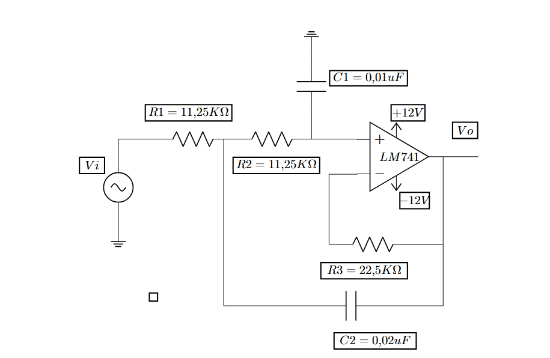
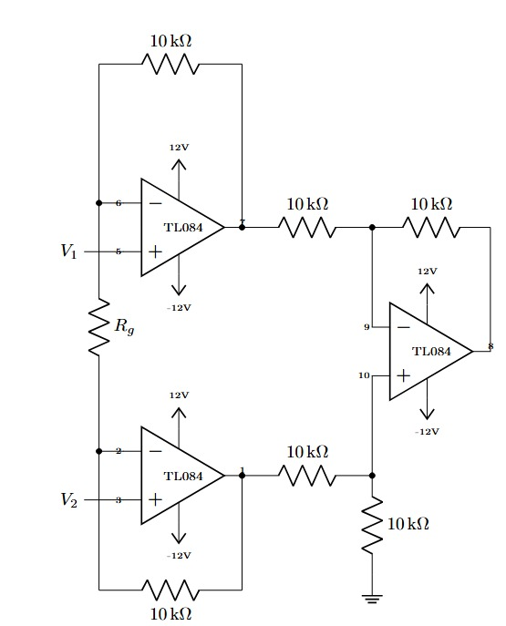
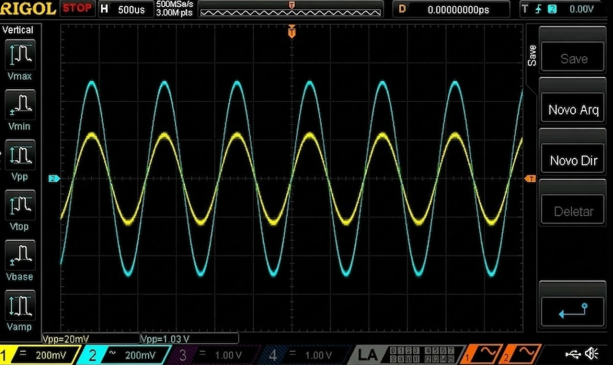
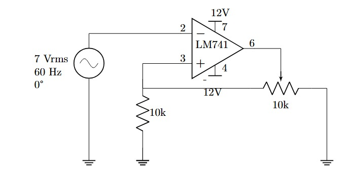
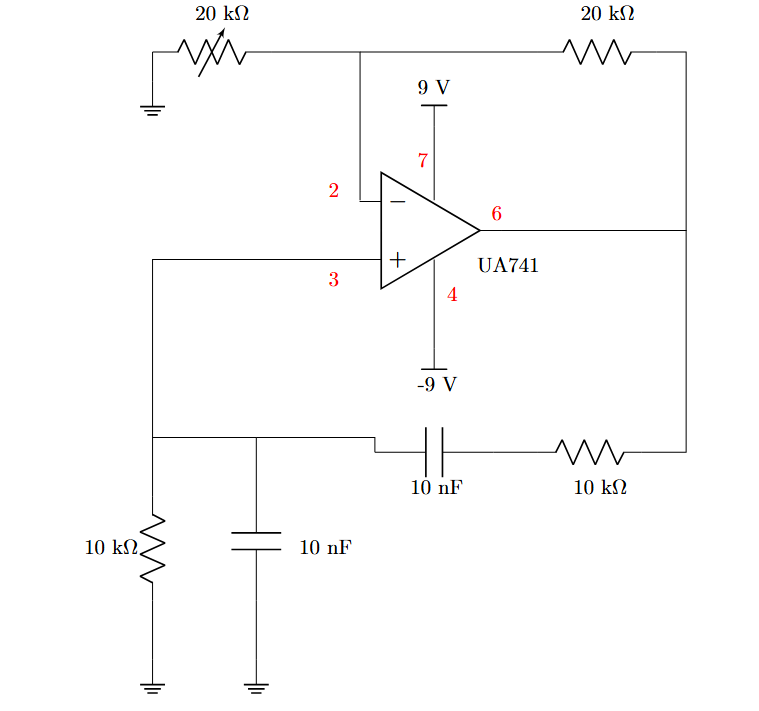

¿Qué queríamos aprender?
El Op-Amp es el bloque fundamental de la electrónica analógica moderna. Pero entender su funcionamiento desde una ecuación no es lo mismo que diseñar con él, simularlo y medir su respuesta real. Este proyecto nació con una pregunta concreta: ¿cuánto se aleja el circuito real del simulado?
La respuesta requería diseñar cinco aplicaciones distintas, cada una con un objetivo diferente — desde procesar señales de frecuencia hasta aislar un sensor del resto del sistema.
Enfoque del proyecto: ciclo completo de ingeniería — análisis matemático → simulación SPICE → implementación en protoboard → medición y comparación de resultados. La validación experimental es la que cierra el aprendizaje.
Cinco circuitos, cinco historias
Aislar frecuencias con precisión matemática
El filtro pasa-bajas de segundo orden Butterworth fue diseñado con topología Sallen-Key para lograr respuesta maximalmente plana en la banda de paso. La frecuencia de corte se calculó analíticamente y luego fue verificada con el diagrama de Bode simulado.


Traducir frecuencia a una tensión medible
El convertidor F/V toma una señal de frecuencia variable como entrada y entrega un voltaje DC proporcional a esa frecuencia. Se validó a tres frecuencias de prueba (1 kHz, 3 kHz, 5 kHz) para caracterizar la linealidad de la respuesta.


Alta ganancia, alta inmunidad al ruido
El amplificador de instrumentación es el circuito que permite medir señales débiles en ambientes con interferencias. Su fortaleza: una ganancia de modo diferencial alta y una ganancia de modo común muy baja — caracterizada por el CMRR (Common Mode Rejection Ratio).



Un comparador que no titubea
El Schmitt Trigger resuelve el problema del comparador convencional frente a señales con ruido: mediante la histéresis — dos umbrales de conmutación diferentes — evita las oscilaciones indeseadas en la salida cuando la señal de entrada bordea el umbral de comparación.


Generar una señal desde cero
El oscilador de Wien genera una señal sinusoidal estable sin señal de entrada — únicamente con la alimentación del Op-Amp y una red de realimentación RC cuidadosamente diseñada para que la condición de oscilación se cumpla en una sola frecuencia.


Resultados y conclusiones
Cada circuito fue validado midiendo sus parámetros clave y comparándolos con la simulación. El proceso de validación confirmó el diseño matemático en todos los casos dentro de márgenes aceptables.
Conclusión central: el ciclo diseño → simulación → implementación → validación es la forma correcta de aprender electrónica analógica. Los errores del circuito físico no son fallos — son información sobre el mundo real que ninguna simulación puede entregar.